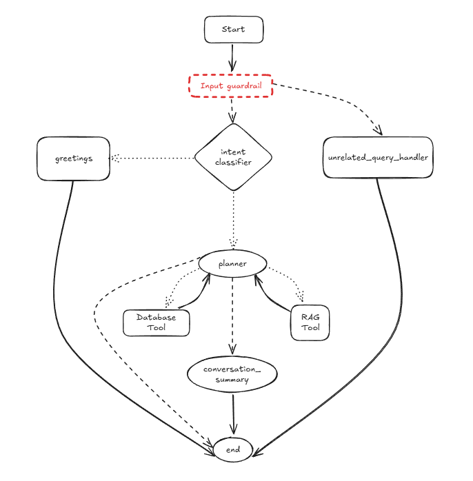
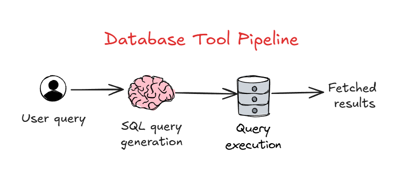

PsyLens
Resources
You can find the code in this repo.
Background
This project is part of my work at TerrablueXT and the objective is to enable Psychologists query/interact with their client’s CRF (Case-Report-Form) response & Mental-health report (PDF).
All the details about various approaches & steps to execute the project are explain in the following sections.
Agent
 The above image demonstrates the Agent workflow that was implemented for this usecase. It is a mixture of both Routing worflow & Agent (LangChain’s blog) The purpose of each node is as follows:
Input guardrail: This node provides protection through OpenAI’s guardrails at following levels:
- Moderation: Detect harmful or policy-violating content including hate speech, harassment, self-harm, and other inappropriate content.
- Jailbreak: Detect jailbreak attempts by identifying various attack patterns.
- Off-topic prompts: Detect prompts deviating for the core task of the agent.
unrelated_query_handler: Any user-query that trips the Guardrails it routed to this node, which returns a regret message.
intent_classifier: This node detects the intent of the input query and routes it accordingly to either the greetings or planner nodes.
greetings: This node handles the greeting related users messages and returns an appropriate response.
planner: This is the main agent responsibel to generate/answer the user’s actual query from the database or PDF reports. It has access to 2 tools: Database-tool & RAG-tool, using which it enriches the LLM context with relevant information to answer user’s query.
conversation_summary: This node generates a concise summary of the running multi-turn conversation between the user & agent. It is triggered when accumulated number of messages exceeds 6 (3-turns).
Note that the user here is the Psychologist
Database Tool
 To answer user’s query related to data stored in database i.e. Client’s demographic, health-history, responses to GAD & PHQ questionnaires. To achieve this, I took the following approach:
- SQL query generation: Firstly, user’s natural language query is converted to an SQL query, using an LLM API call enriched with the database schema.
- Query execution: The generated SQL query is then executed using LangChain’s
SQLDatabaseengine and the fetched results are returned to the Planner agent.
As an security measure, I created a user profile with read-only privileges of the database, to run/execute the generated SQL query. This is to prevent executing a malicious query, modifying the database in unwanted ways.
RAG Tool
Retrieval Augmented Generation is used to augement & enrich the context of LLM to answer queries from domain-specific or personal knowledge base which the LLM hasn’t been trained on. This is a technique to ground the LLM with unseen & specific data and generate responses based on that.
Here, in this case the knowledge base consists of Psychologist PDF reports, each of which contain the mental-health analysis for a particular client. I am leveraging RAG to let Psychologist interact with these report to reduce the analysis effort during/before 1-on-1 meeting with the client.
The PDF reports are quite structured in their format:
- Multimodal i.e. Text + Plots/Graphs(images) + Tabular data
- All the topic headings in each report are the same except the content
Since, the reports are multimodal (as they contain text & images), there are following approaches mentioned in this blog:
- Embed all modalities into the same vector space
- Ground all modalities into one primary modality
- Have separate stores for different modalities
I chose the 2nd approach, where I ground all the modalities into the text modality.
Pipeline
 The RAG pipeline I used has the following steps:
The RAG pipeline I used has the following steps:
Document Parsing
This steps involves loading & the parsing the content in the PDF. For this step, Docling package was used to
- Extract text content as markdown
- Extract table as markdown (preserves the tabular structure to some extent in text format) because ~90% of PDF is just tables.
- Extract plots-images as base64 encoded strings.
I did try other PDF loaders from LangChain such as PyMuPDF, PDFPlumber & PyMuPDF4LLM, but each of them had issues of their own like unable to extract tables as markdown text, adding extra columns in tables etc.
Docling provide good results in the above tasks and that’s the reason for this choice.
Document Chunking
This is the most crucial step in a RAG pipeline. As the name suggests, we divide the entire document into chunks which are then embedded into a vector store. There are many different chunking strategies to choose from, but keeping document-structure & context preservation between chunks in mind, I chose Document-structure based chunking.
What this steps involves is to chunk the entire document based on the Headers (specifically Heading 2) using MarkdownTextHeaderSplitter from LangChain. The effect: Preserves context of each title in document by keeping all the content of that title together in a single chunk.
Extra preprocessing:
- Removing Page header from the markdown text extracted during parsing step
- Adding metadata such as file-name, chunk-type(image or text)
Contextual Summary
This is an additional step in RAG pipeline suggested in Anthropic’s blog, which results in better retrieval metrics. It involves generating a summary of a particular chunk w.r.t to the entire document. This summary helps locate the chunk in the document and provide necessary context about what the chunk content is about w.r.t the document. The summary is then prepended to original chunk and then embedded into the vector store
Since, the plot-images need to converted to text itself, I didn’t generate a contextual summary for them.
Indexing
Now, to index the chunks, I experimented along these aspects:
Choice of Embedding model: MTEB leaderboard is a good reference to compare Embedding models’ performance for different tasks. In our case, since retrieval is the main task, I tried out the following Embedding models:
- qwen3-embedding-8B: Its open-source and is the top-performer on the leaderboard currently. Accessed this model via Nebius’s API, due to resource constraints.
- qwen3-embedding-4B: Its open-source and provides great balance between performance & memory requirement.
- gemini-embedding-001: Accessible via API and was the top-model before Qwen3 dethroned it.
- voyage-3-large: Suggested in Anthropic’s blog. This model can be accessed via API and they offer first 200M embedding tokens for free
- multilingual-e5-large-instruct: Due to smaller size and it has decent performance on retrieval task
Choice of Vector-store: As the name suggests, they are used to store the embedding vectors of all the chunks. I chose Qdrant due to the following reasons:
Open-source & can be run locally
Written in Rust which makes it fast & reliable
Fastest metadata filtering
High throughput
To create the retriever, I used LangChain’s
MultiVectorRetriever, withQdrantVectorStoreas vector-store to index the chunk-embedding-vectors &InMemoryStoreas doc-store to store the original document chunks
Choice of Search-type: I experimented with the following search-types:
- Semantic search: It involves retrieving documents based on similarity scores between the query-embedding & vector-embeddings in the vector-store
- Hybrid search: It combines Semantic search with Keyword-based (BM25) search, retrieving documents using RRF(Reciprocal Rank Fusion) as combination & ranking strategy.
Evaluation
To log the performance of the retrieval, I created a evaluation set consisting of queries & golden-chunk-ids(ground-truth) key-value pairs against which the pipeline will be evaluated. The metric I chose in this case was Recall@k, where k={3, 5, 7}.
Following are the results for the experiments conducted:
| Embedding model | Semantic Search | Hybrid Search |
|---|---|---|
| multilingual-e5-large-instruct | Recall@3: 81.67% Recall@5: 90% Recall@7: 96% | Recall@3: 82.33% Recall@5: 95% Recall@7: 97% |
| gemini-embedding-001 | Recall@3: 77.33% Recall@5: 88.67% Recall@7: 95.33% | Recall@3: 84% Recall@5: 93% Recall@7: 97.67% |
| qwen3-embedding-4B | Recall@3: 79% Recall@5: 88% Recall@7: 94.67% | Recall@3: 83.33% Recall@5: 93% Recall@7: 96.33% |
| qwen3-embedding-8B | Recall@3: 83.67% Recall@5: 93.67% Recall@7: 96.33% | Recall@3: 84.67% Recall@5: 93.33% Recall@7: 97.33% |
| voyage-3-large | Recall@3: 85% Recall@5: 95.33% Recall@7: 98.33% | Recall@3: 86.67% Recall@5: 93.67% Recall@7: 97.33% |
| Embedding model | Without Re-ranking | With Re-ranking |
|---|---|---|
| voyage-3-large | Recall@3: 85% Recall@5: 95.33% Recall@7: 98.33% | Recall@3: 79.33% Recall@5: 88.67% Recall@7: 95.67% |
Retrieval
Based on the results of above experiments, I made the following choices for the RAG retrieval pipeline:
- Retrieving only top-5 relevant chunks: This is the sweet-spot between top-3 & top-7 with a balance of observed performance & quantity of relevant information injected into the LLM context.
- Voyage-3-large as the embedding model: From the evaluation performances, Voyage-3-large provided the best metric for top-5 retrieved chunks.
- Semantic search in vector-database: Again from the evaluation performances, semantic search with Voyage-3-large embedding model was better than Hybrid search.
- No reranking after retrieval: Re-ranking post-retrieval saw a dip in Recall@5 metric performance.